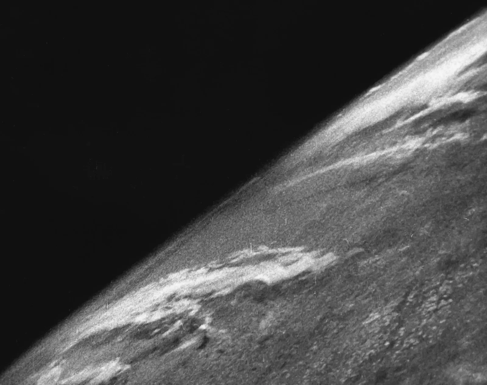

Muchas veces el ser humano ha visto hacia el cielo y pensado en que podia estar al mas alla, Gracias a las tecnologias de hoy en dia podemos conseguir una buena vision de lo que esta afuera de nuestra cuna, la tierra.
Varias emocionantes Imagenes han sido colectadas al pasar el tiempo, empezando en 1946:


Estas fotos son solo el comienzo de nuestro facinamiento con el espacio, a medidas que el tiempo ha pasado hemos llegado a tener mejores y mejores imagenes!